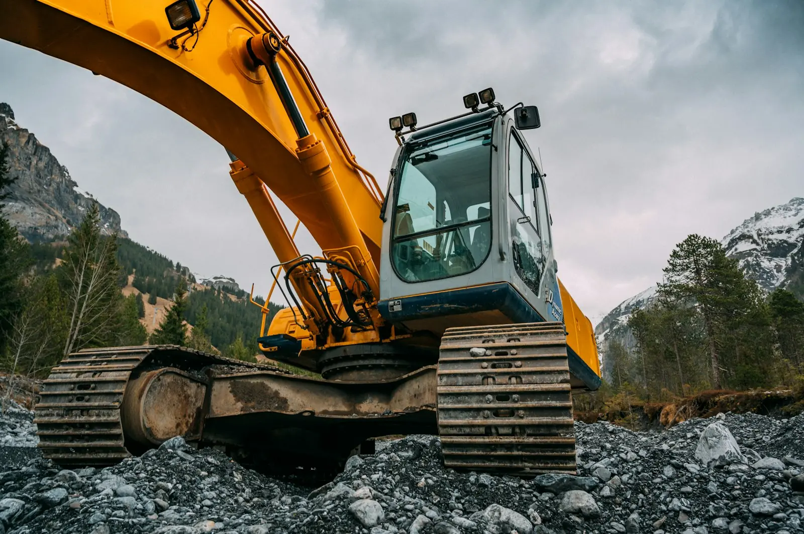
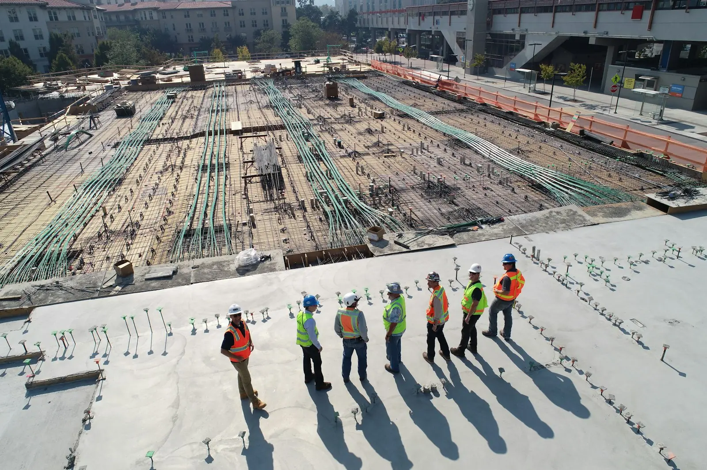

Terrassement, drains français, fosses septiques et nivellement — à Maskinongé et dans les environs.*
Appeler pour une soumission
Basés au 104, rue Désiré à Maskinongé. Secteurs desservis à confirmer.*
819-244-1342
lesexcavationsdominiclambert@outlook.com
Logo : mot-symbole provisoire. Photos d'illustration.